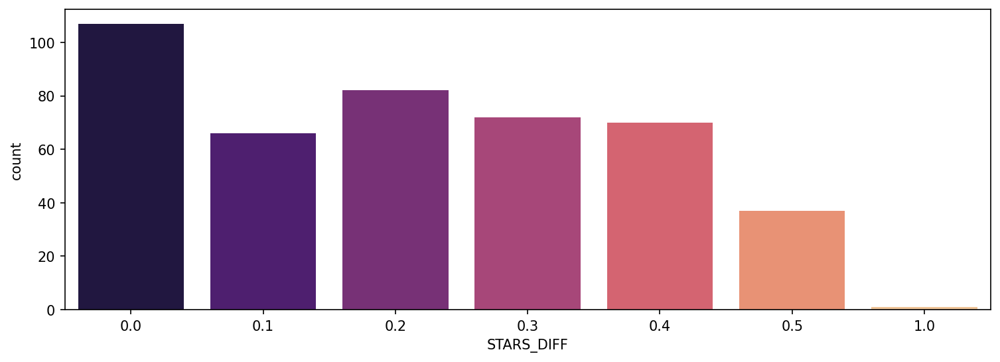

Fandango
Fandango Media, LLC is an American ticketing company that sells movie tickets as well as give movies reviews.
In 2015, Fandango faced allegations of providing misleading reviews for movies, as outlined in the mentioned article. FiveThirtyEight
Aim
When a company both displays, movie ratings and profits from selling tickets, there could be a bias toward higher ratings to boost sales. Transparency and audience awareness are essential to prevent such biases.The goal is to assess the data from Fandango and compare it with the claims made in the 538 article to ascertain whether Fandango's ratings in 2015 were indeed influenced to favor higher ratings, potentially to boost ticket sales.
Technologies Used
Language: python
Libraries: numpy, pandas, matplotlib and seaborn
Data
The data set is openly available on 538's github. There are two csv files, one with Fandango Stars and Displayed Ratings, and the other with aggregate data for movie ratings from other sites, like Metacritic, IMDB, and Rotten Tomatoes.
all_sites_scores.csv
all_sites_scores.csv contains every film that has a Rotten Tomatoes rating, a RT User rating, a Metacritic score, a Metacritic User score, and IMDb score, and at least 30 fan reviews on Fandango. The data from Fandango was pulled on Aug. 24, 2015.
fandango_scape.csv
fandango_scrape.csv contains every film 538 pulled from Fandango.
part 1 :Fandango site
Importing
import numpy as np
import pandas as pd
import matplotlib.pyplot as plt
import seaborn as sns
fandango = pd.read_csv("fandango_scrape.csv")
fandango.head()
Output
The relationship between popularity of a film and its rating. By a scatterplot which is showing the relationship between rating and votes.
plt.figure(figsize=(10,4),dpi=150)
sns.scatterplot(data=fandango,x='RATING',y='VOTES');
Output
Creating a new column that is able to strip the year from the title strings and set this new column as YEAR
fandango['YEAR'] = fandango['FILM'].apply(lambda title:title.split('(')[-1]))
fandango
Output
number of movies in the Fandango DataFrame per year.
fandango['YEAR'].value_counts()
Output
The count of movies per year:
sns.countplot(data=fandango,x='YEAR')
Output
the top 10 movies with the highest number of votes.
fandango.nlargest(10,'VOTES')
Output
removing any films that have zero votes.
fan_reviewed = fandango[fandango['VOTES']>0]
KDE plot, that displays the distribution of ratings (STARS) versus what the true rating was from votes (RATING)
plt.figure(figsize=(10,4),dpi=150)
sns.kdeplot(data=fan_reviewed,x='RATING',clip=[0,5],fill=True,label='True Rating')
sns.kdeplot(data=fan_reviewed,x='STARS',clip=[0,5],fill=True,label='Stars Displayed')
plt.legend(loc=(1.05,0.5))
Output
Calculating this difference with STARS-RATING and rounding these differences to the nearest decimal point.
fan_reviewed["STARS_DIFF"] = fan_reviewed['STARS'] - fan_reviewed['RATING']
fan_reviewed['STARS_DIFF'] = fan_reviewed['STARS_DIFF'].round(2)
fan_reviewed
Output
The count plot which display the number of times a certain difference occurs:
plt.figure(figsize=(12,4),dpi=150)
sns.countplot(data=fan_reviewed,x='STARS_DIFF',palette='magma')
Output

the plot show that one movie was displaying over a 1 star difference than its true rating!
fan_reviewed[fan_reviewed['STARS_DIFF'] == 1]
Output
Part 2: Comparison of Fandango Ratings to Other Sites
all_sites = pd.read_csv("all_sites_scores.csv")
all_sites.head()
Output
Rotten Tamatoes
RT has two sets of reviews, their critics reviews (ratings published by official critics) and user reviews.
plt.figure(figsize=(10,4),dpi=150)
sns.scatterplot(data=all_sites,x='RottenTomatoes',y='RottenTomatoes_User')
plt.xlim(0,100)
plt.ylim(0,100)
Output
Creating a new column based off the difference between critics ratings and users ratings for Rotten Tomatoes. ie :RottenTomatoes-RottenTomatoes_User
all_sites['Rotten_Diff'] = all_sites['RottenTomatoes'] - all_sites['RottenTomatoes_User']
Output
the Mean Absolute Difference between RT scores and RT User scores is.
all_sites['Rotten_Diff'].apply(abs).mean()
Output
15.095890410958905
Histogramsof distribution of the differences between RT Critics Score and RT User Score.
plt.figure(figsize=(10,4),dpi=200)
sns.histplot(data=all_sites,x='Rotten_Diff',kde=True,bins=25)
plt.title("RT Critics Score minus RT User Score");
Output
distribution of the absolute value difference between Critics and Users on Rotten Tomatoes.
plt.figure(figsize=(10,4),dpi=200)
sns.histplot(x=all_sites['Rotten_Diff'].apply(abs),bins=25,kde=True)
plt.title("Abs Difference between RT Critics Score and RT User Score");
Output
the top 5 movies, users rated higher than critics on average
all_sites.nsmallest(5,'Rotten_Diff')[['FILM','Rotten_Diff']]
Output
the top 5 movies critics scores higher than users on average.
print("Critics love, but Users Hate")
all_sites.nlargest(5,'Rotten_Diff')[['FILM','Rotten_Diff']]
Output
MetaCritic
a scatterplot of the Metacritic Rating versus the Metacritic User rating.
plt.figure(figsize=(10,4),dpi=150)
sns.scatterplot(data=all_sites,x='Metacritic',y='Metacritic_User')
plt.xlim(0,100)
plt.ylim(0,10)
Output
the highest Metacritic User Vote count for a movie
all_sites.nlargest(1,'Metacritic_user_vote_count')
Output
IMBD
a scatterplot for the relationship between vote counts on MetaCritic versus vote counts on IMDB.
plt.figure(figsize=(10,4),dpi=150)
sns.scatterplot(data=all_sites,x='Metacritic_user_vote_count',y='IMDB_user_vote_count')
Output
the highest IMDB user vote count for a movie
all_sites.nlargest(1,'IMDB_user_vote_count')
Output
Part 3: Fandago Scores vs. All Sites
Combining the Fandango Table with the All Sites table, by inner merge to merge together both DataFrames based on the FILM columns.
df = pd.merge(fandango,all_sites,on='FILM',how='inner')
Output
Creating new normalized columns for all ratings so they match up within the 0-5 star range shown on Fandango.
df['RT_Norm'] = np.round(df['RottenTomatoes']/20,1)
df['RTU_Norm'] = np.round(df['RottenTomatoes_User']/20,1)
df['Meta_Norm'] = np.round(df['Metacritic']/20,1)
df['Meta_U_Norm'] = np.round(df['Metacritic_User']/2,1)
df['IMDB_Norm'] = np.round(df['IMDB']/2,1)
df.head()
Output
Now creating a norm_scores DataFrame that only contains the normalizes ratings. Include both STARS and RATING from the original Fandango table
norm_scores = df[['STARS','RATING','RT_Norm','RTU_Norm','Meta_Norm','Meta_U_Norm','IMDB_Norm']]
norm_scores.head()
Output
Comparing Distribution of Scores Across Sites
def move_legend(ax, new_loc, **kws):
old_legend = ax.legend_
handles = old_legend.legendHandles
labels = [t.get_text() for t in old_legend.get_texts()]
title = old_legend.get_title().get_text()
ax.legend(handles, labels, loc=new_loc, title=title, **kws)
fig, ax = plt.subplots(figsize=(15,6),dpi=150)
sns.kdeplot(data=norm_scores,clip=[0,5],shade=True,palette='Set1',ax=ax)
move_legend(ax, "upper left")
Output
Clearly Fandango has an uneven distribution. We can also see that RT critics have the most uniform distribution. Let's directly compare these two
A KDE plot that compare the distribution of RT critic ratings against the STARS displayed by Fandango.
fig, ax = plt.subplots(figsize=(15,6),dpi=150)
sns.kdeplot(data=norm_scores[['RT_Norm','STARS']],clip=[0,5],shade=True,palette='Set1',ax=ax)
move_legend(ax, "upper left")
Output
histplot which is comparing all normalized scores.
plt.subplots(figsize=(15,6),dpi=150)
sns.histplot(norm_scores,bins=50)
Output
the worst movies rated across all platforms.
sns.clustermap(norm_scores,cmap='magma',col_cluster=False)
Output
The distribution of ratings across all sites for the top 10 worst movies.
plt.figure(figsize=(15,6),dpi=150)
worst_films = norm_films.nsmallest(10,'RT_Norm').drop('FILM',axis=1)
sns.kdeplot(data=worst_films,clip=[0,5],shade=True,palette='Set1')
plt.title("Ratings for RT Critic's 10 Worst Reviewed Films");
Output
Conclusion
Clearly Fandango is rating movies much higher than other sites, especially considering that it is then displaying a rounded up version of the rating. the top 10 worst movies, based off the Rotten Tomatoes Critic Ratings are :
norm_films = df[['STARS','RATING','RT_Norm','RTU_Norm','Meta_Norm','Meta_U_Norm','IMDB_Norm','FILM']]
norm_films.nsmallest(10,'RT_Norm')
Output
Here we can clearly see tekken film got 4.5 stars from fandango, on the other hand comparison to Rotten tamatoes which had gave 0.4 rating
norm_films.iloc[25]
Output
result = 0.4+2.3+1.3+2.3+3
avg_review = result/5
avg_review = 1.86
Hence Fandango is showing around 3-4 star ratings for films
that are clearly bad! Notice the biggest offender,
Taken 3!. Fandango is displaying 4.5 stars on their
site for a film with an average rating of 1.86 across
the other platforms!